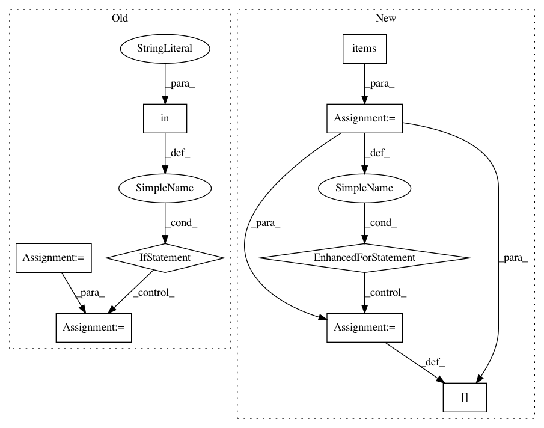

a33ed4b569398e563bd4543a5301e6b7baa34c74,open_seq2seq/utils/utils.py,,iterate_data,#Any#Any#Any#Any#Any#,80
Before Change
// this data_layer is at the last batch with few more elements, cutting
if total_samples[worker_id] > dl_sizes[worker_id]:
last_batch_size = dl_sizes[worker_id] % batch_size
inputs["source_tensors"] = model.clip_last_batch(
inputs["source_tensors"], last_batch_size,
)
if "target_tensors" in inputs:
inputs["target_tensors"] = model.clip_last_batch(
inputs["target_tensors"], last_batch_size,
)
outputs = model.clip_last_batch(outputs, last_batch_size)
if compute_loss:
total_loss += loss * batch_size
After Change
// this data_layer is at the last batch with few more elements, cutting
if total_samples[worker_id] > dl_sizes[worker_id]:
last_batch_size = dl_sizes[worker_id] % batch_size
for key, value in inputs.items():
inputs[key] = model.clip_last_batch(value, last_batch_size)
outputs = model.clip_last_batch(outputs, last_batch_size)
if compute_loss:
total_loss += loss * batch_size
In pattern: SUPERPATTERN
Frequency: 3
Non-data size: 9
Instances
Project Name: NVIDIA/OpenSeq2Seq
Commit Name: a33ed4b569398e563bd4543a5301e6b7baa34c74
Time: 2018-05-30
Author: igor.a.gitman@gmail.com
File Name: open_seq2seq/utils/utils.py
Class Name:
Method Name: iterate_data
Project Name: pyannote/pyannote-audio
Commit Name: abbfdc5b04ec1824e42cebb472626d234ff7bd36
Time: 2017-01-09
Author: bredin@limsi.fr
File Name: scripts/speaker_embedding.py
Class Name:
Method Name: test
Project Name: pyannote/pyannote-audio
Commit Name: abbfdc5b04ec1824e42cebb472626d234ff7bd36
Time: 2017-01-09
Author: bredin@limsi.fr
File Name: scripts/speaker_embedding.py
Class Name:
Method Name: tune